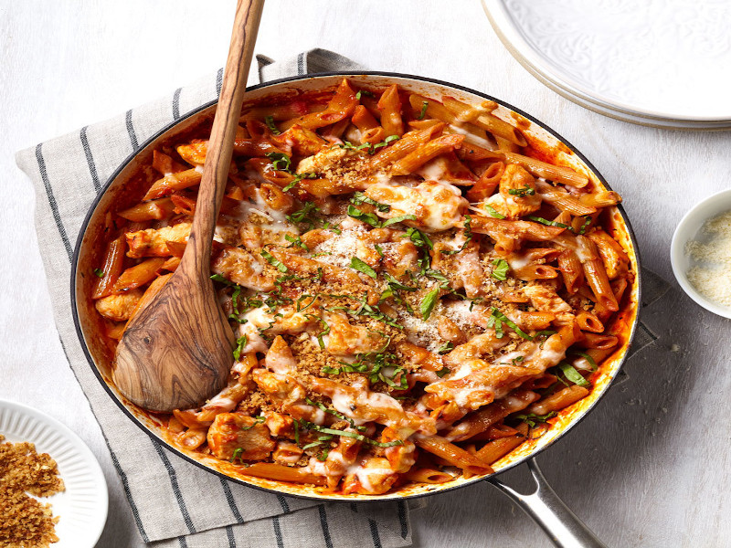

Chicken Parmesan Pasta

Description
A hearty meal the whole family will love!
Ingredients
- 2 cups of cooked shredded chicken
- 1 tsp of Italian seasoning
- 16oz dried short-cut pasta (bowties or rigatoni work as well)
- 24oz spaghetti sauce
- 1 cup of shredded Mozzarella cheese
- Black pepper, to taste
Steps
-
In a large pot, add spaghetti sauce, Italian seasoning, and black
pepper.
-
Fill the empty spaghetti sauce can or jar with water, and add the water
to the pot.
- Bring to a boil, then reduce to a strong simmer.
-
Add in the dry pasta, stir, then cover and cook for 10-15 minutes or
until the pasta is cooked to your liking. Stir occasionally and add more
water as needed.
-
When the pasta is almost done, add shredded chicken and mozzarella
cheese.
- Stir well, and enjoy!
Click for more recipies